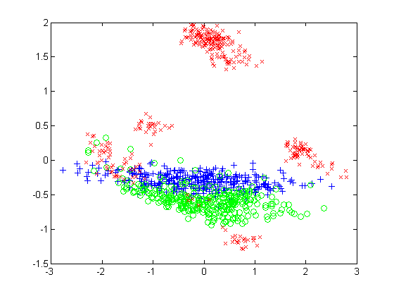
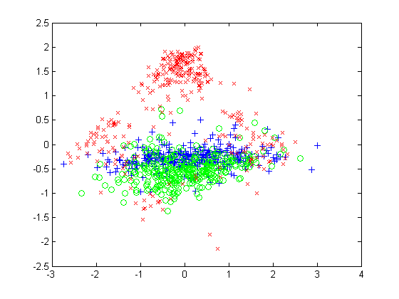
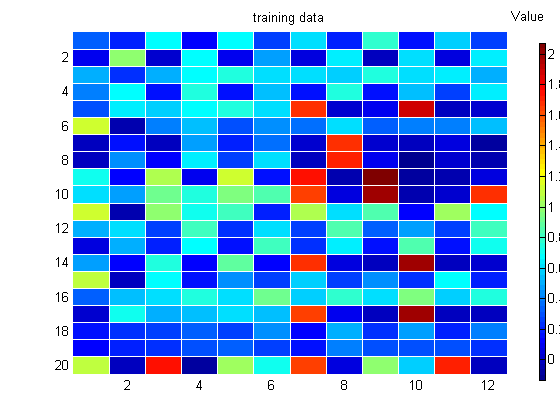
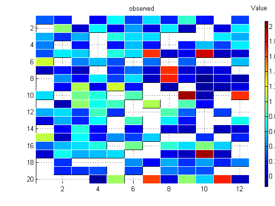

PPCA Imputation Demo
Reproduce fig 12. 11 from Bishop's book
Data from http://www.ncrg.aston.ac.uk/GTM/3PhaseData.html
Contents
% This file is from pmtk3.googlecode.com loadData('oilFlow3Class'); ndx = 1:1000; X = DataTrn(ndx,:); % 1000x12 y = DataTrnLbls(ndx,:); % 1000x3 setSeed(0); [C, ss, mu, Z, Ximputed] = ppca_mv(X,2,false); W = C'; markers = {'b+', 'go', 'rx'}; % homogeneous, annualr, laminar fig1 = figure(); for c=1:3 ndx = find(y(:,c)); plot(Z(ndx,1), Z(ndx,2), markers{c}); hold on end printPmtkFigure('ppcaOil') [n,d] = size(X); missing = rand(n,d) > 0.7; Xmiss = X; Xmiss(missing) = NaN; [C, ss, mu, Z, Ximputed] = ppca_mv(Xmiss,2,false); W = C';
visualize embedding
fig2 = figure(); for c=1:3 ndx = find(y(:,c)); plot(Z(ndx,1), Z(ndx,2), markers{c}); hold on end printPmtkFigure('ppcaOilMissing')
visualize imputation
ndx = 1:20;
hintonScaleMulti({X(ndx,:)}, {'map', 'jet', 'title', 'training data'}, ...
{Xmiss(ndx,:)}, {'map', 'Jet', 'title', 'observed'}, ...
{Ximputed(ndx,:)}, {'title', 'imputed'});
printPmtkFigure('ppcaOilDataImputed')
figure(fig1); printPmtkFigure('ppcaOilDataTrain')
figure(fig2); printPmtkFigure('ppcaOilDataMissing')
 